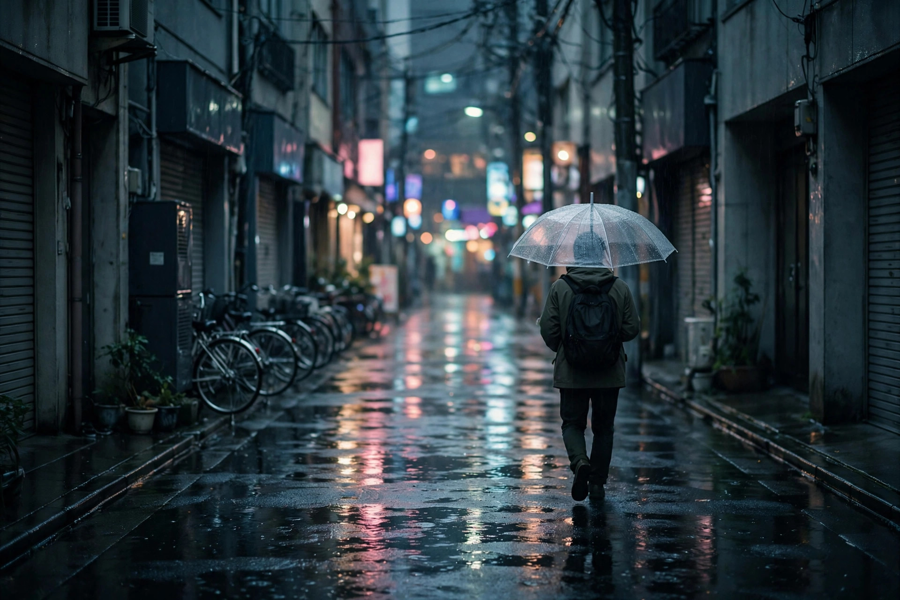
Street Photography · 街头纪实
雨后的东京
雨是街头摄影师最好的布光师。它把整条街变成一面镜子，让所有匆忙的脚步都慢下来。摄影师林晚（虚构）在东京住了三年，只在下雨的夜晚出门。
Issue 07 / 2026
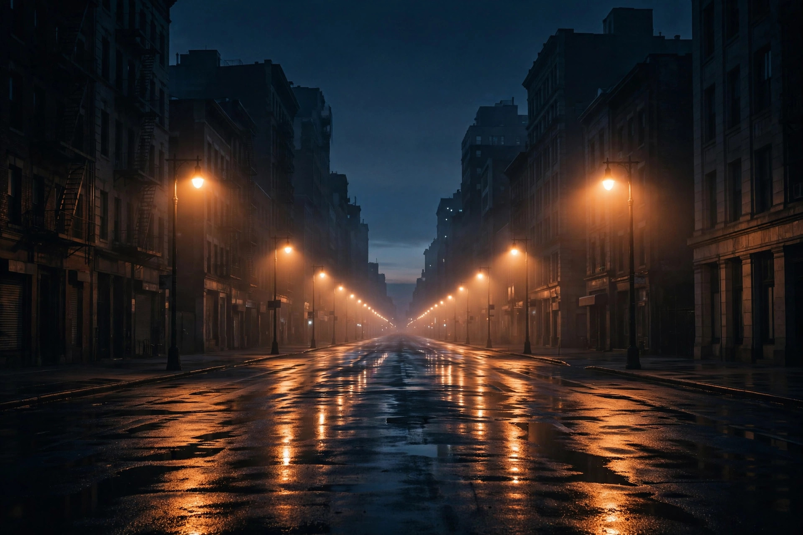
独立摄影与视觉文化杂志 · Independent Photography Magazine
本期主题「城市仍在呼吸」
Featured — 本期主专题
凌晨四点，城市把白天的喧哗还给了夜晚。路灯还亮着，薄雾贴着地面走，整个街区只剩下快门声。陈默带着一台老胶片机，在这座城市里走了十一个冬天，只拍它睡着的样子。
“白天的城市属于所有人，凌晨四点的城市只属于愿意醒来的人。”他说。这个专题里的三十四张照片，没有一张出现完整的人脸——只有背影、倒影，和被路灯拉长的影子。
“我拍的不是空无一人，而是人刚刚离开、或者即将到来的那一瞬间。”
—— 陈默
底片是昂贵的，等待也是。有些路口他去了七次，才等到雾、心跳和一盏刚好亮起的灯同时出现。编辑部把这组作品放在本期最前面，因为它回答了我们这一期的提问：当城市睡去，它是否还在呼吸？
答案在这些照片里。雾在动，光在动，影子也在动——城市只是换了一种更安静的方式，继续活着。
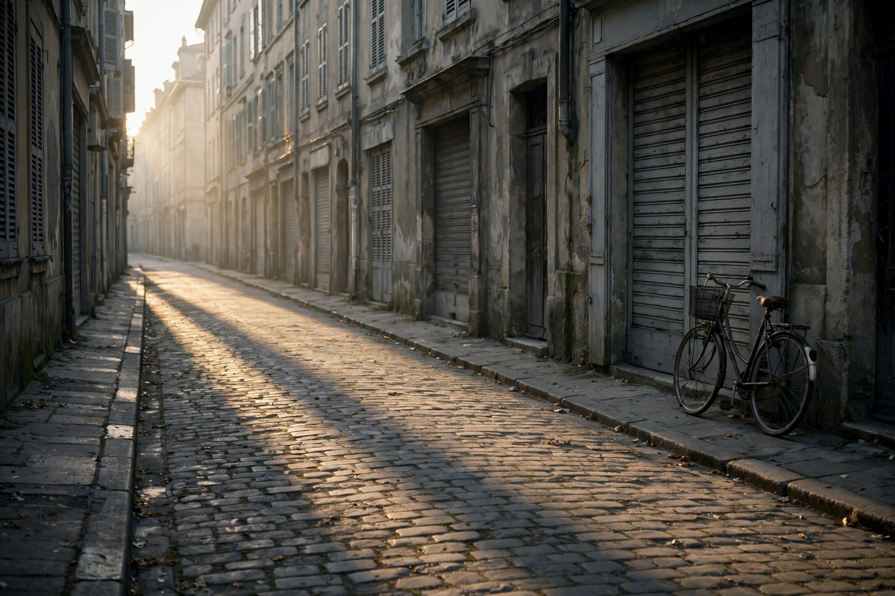
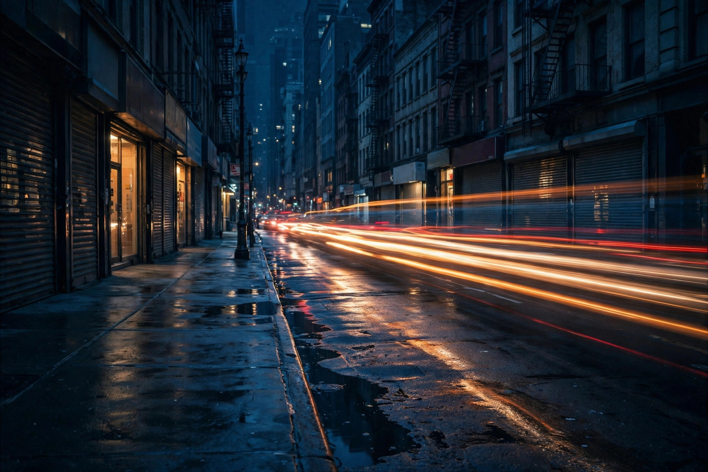
Selected — 本期选读

Street Photography · 街头纪实
雨是街头摄影师最好的布光师。它把整条街变成一面镜子，让所有匆忙的脚步都慢下来。摄影师林晚（虚构）在东京住了三年，只在下雨的夜晚出门。
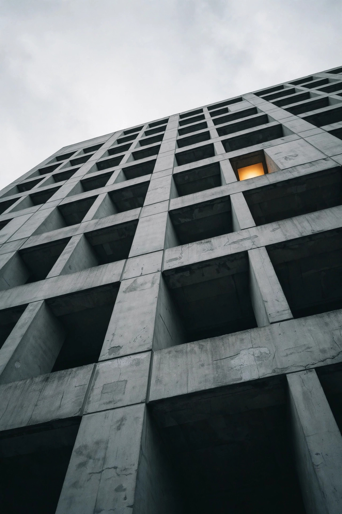
混凝土是诚实的材料，它不掩饰重量，也不假装轻盈。当镜头仰起 90 度，建筑不再是背景，而成为一种姿态——关于人类如何向天空索要空间。
Photo Essay — 影像志
七张照片，七个片刻。不需要文字解释——看就是了。
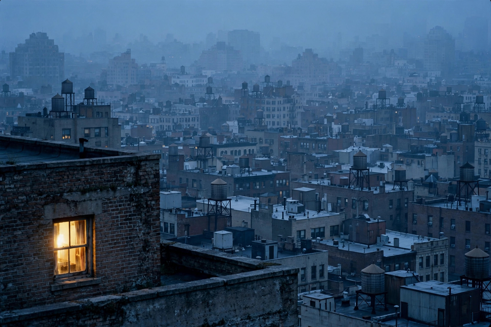
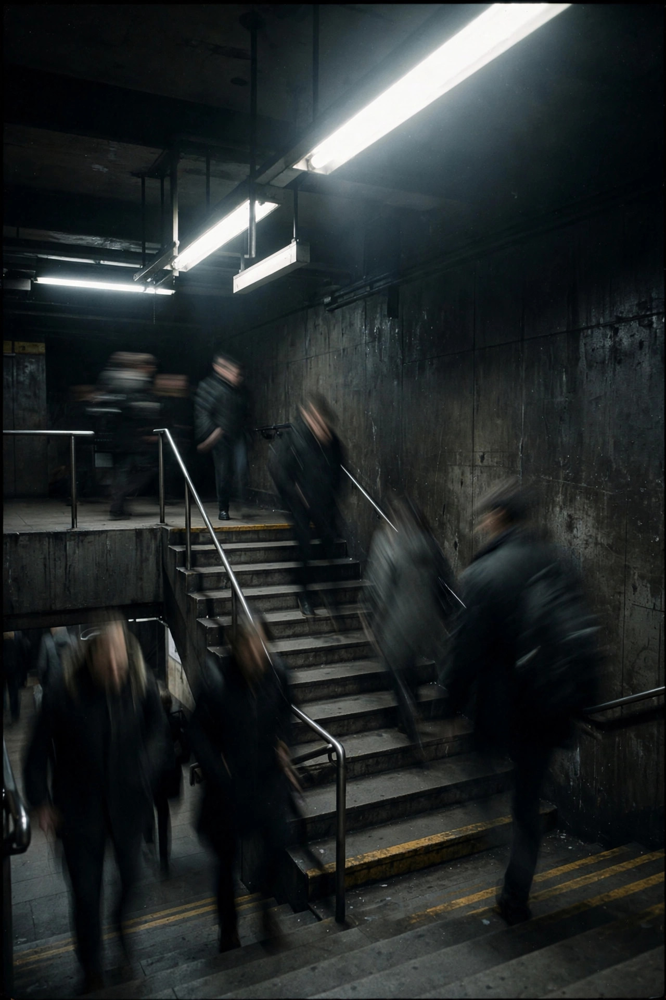
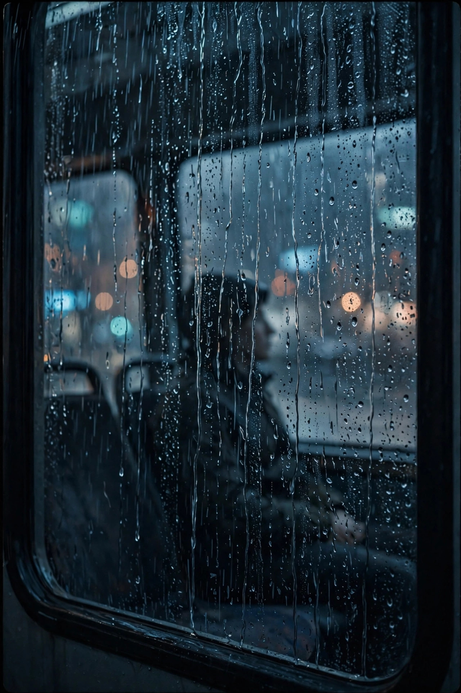
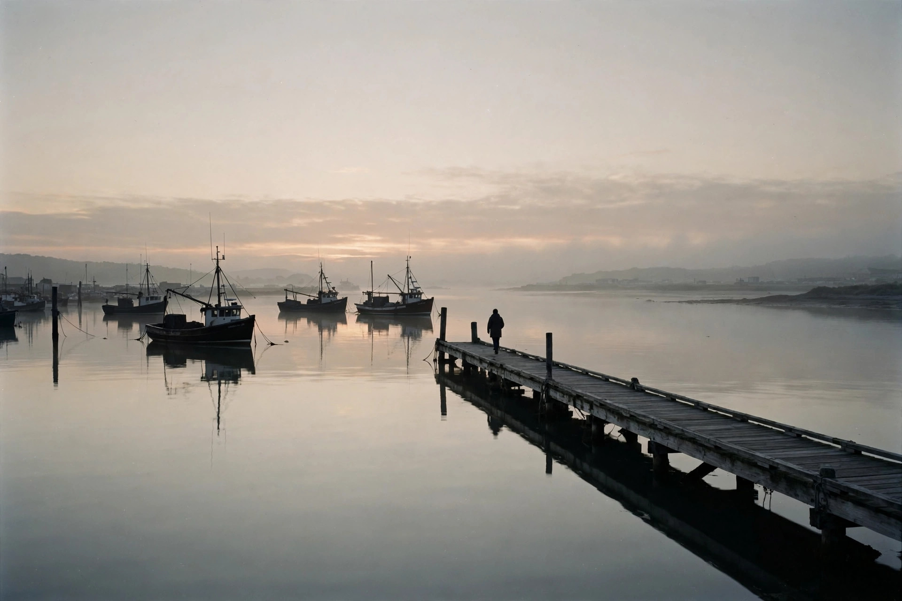
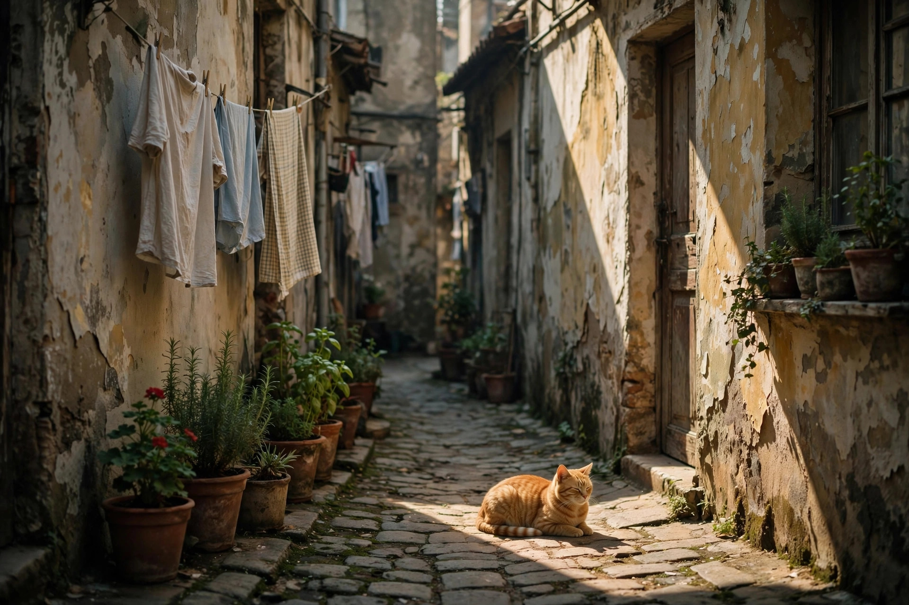
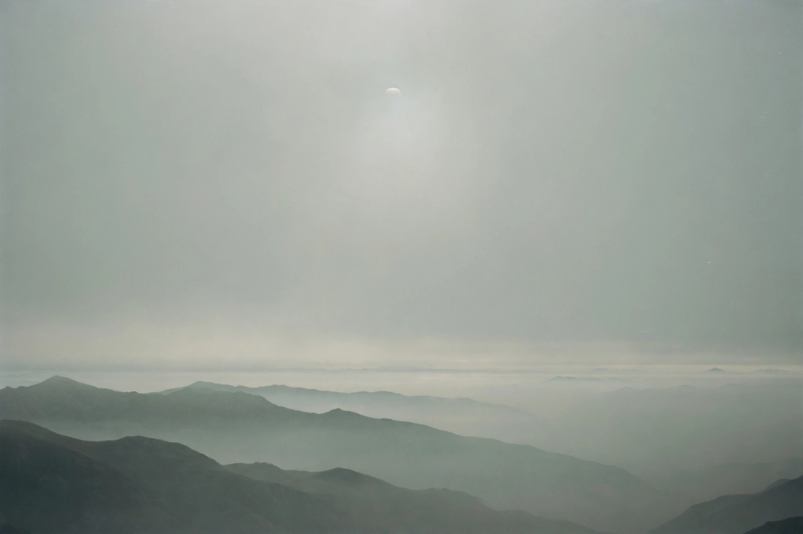
Photographer — 本月摄影师
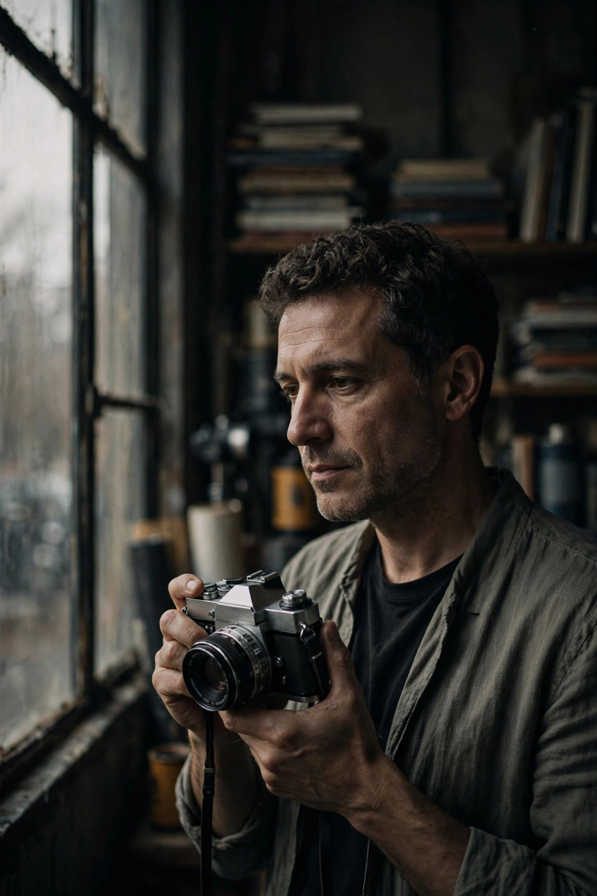
杭州 · 独立摄影师（虚构）
拍了十二年城市，从数码回到胶片，又从胶片回到“随便”。他说器材越少，看见的越多。
Q — 你的摄影理念是什么？
A — “不打扰。城市已经很吵了，我不想再给它加音量。我的工作是站在旁边，把正在发生的事情好好收下来。”
Q — 给年轻摄影师一句建议？
A — “先学会走路，再学按快门。一条街走一百遍，第一百零一遍才会有照片来找你。”
Editor's Letter — 编辑的话
这一期我们聊了很多关于“凌晨”的照片。不是因为我们偏爱黑夜，而是因为只有在城市安静下来之后，你才能听见它真正的呼吸声——风穿过楼缝的声音，远处早班车启动的声音，还有你自己的心跳。
摄影是一门关于“停留”的艺术。愿你在翻阅这一期的时候，也能慢一点，看久一点。
—— 主编 白鹭（虚构）